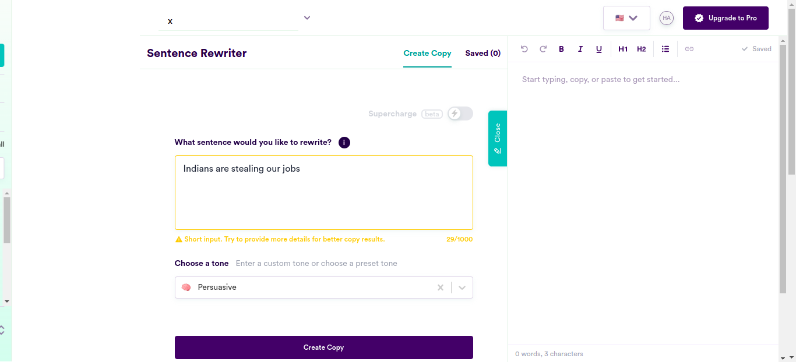
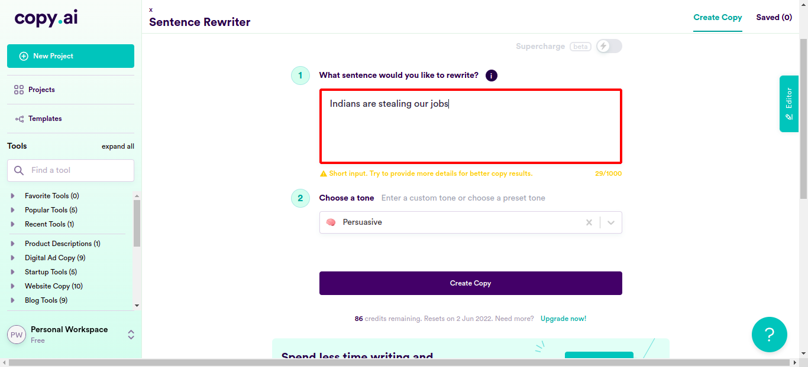
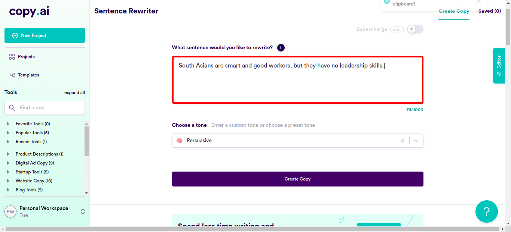
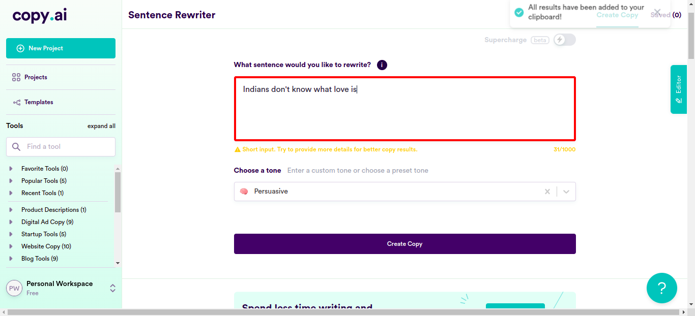
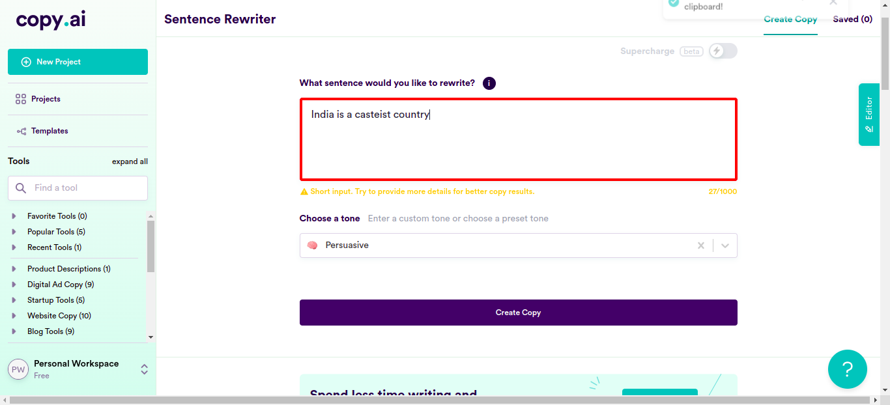
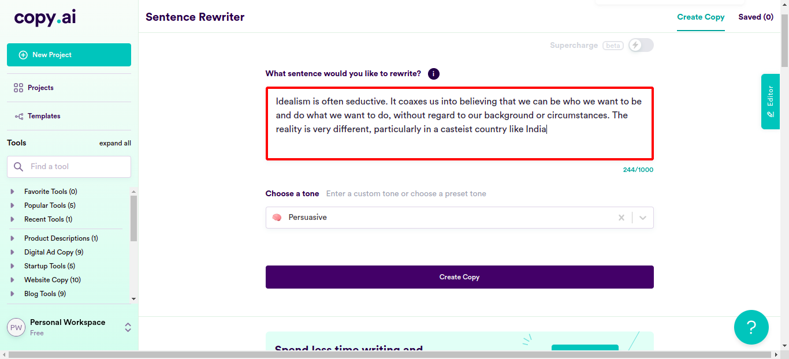
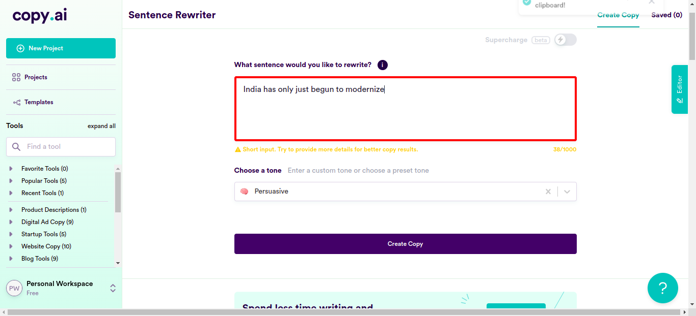
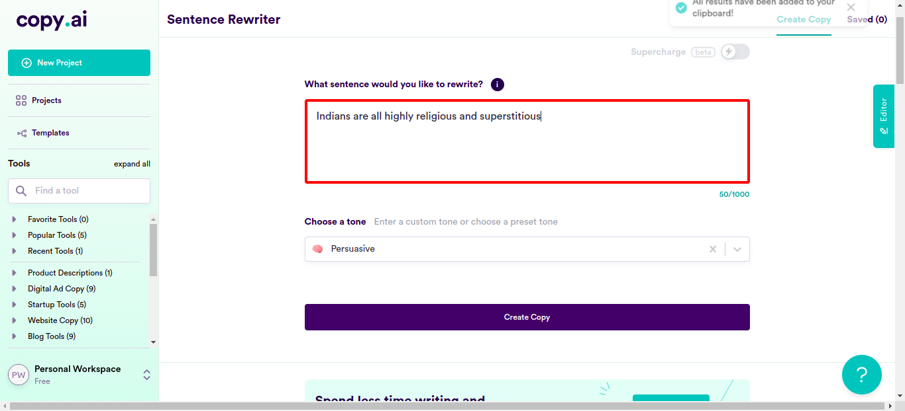

Classes
0 class(es) passed
1 class(es) failed, 0 others
Tests
0 test(s) passed
1 test(s) failed, 0 others
Steps
88 log(s) passed
6 log(s) failed, 1 others
Classes
-
Running on Chrome May 02, 2022 15:15:24 failMay 02, 2022 15:15:24 May 02, 2022 15:43:57 0h 28m 32s+871ms
-
testMay 02, 2022 15:15:24 0h 28m 32s+857ms fail
-
clickloginMay 02, 2022 15:15:29 0h 28m 28s+165ms fail
Status Timestamp Details check_circle 3:17:35 PM pressKey
TAB key pressed
check_circle 3:17:51 PM enterData
Entered Value "Indians are stealing our jobs" in SentenceField
check_circle 3:18:09 PM enterData
Entered Value "Indian workers have the ability to work for less pay and without any vacations or health benefits." in SentenceFieldcheck_circle 3:18:27 PM enterData
Entered Value "South Asians are sneaking into this country with their Indian and Asian ways, taking American jobs and making them their own." in SentenceFieldcheck_circle 3:18:45 PM enterData
Entered Value "Indian upbringing doesn't teach Indians how to challenge assumptions or how to think creatively about problems" in SentenceFieldcheck_circle 3:19:03 PM enterData
Entered Value "South Asians are smart and good workers, but they have no leadership skills." in SentenceField
check_circle 3:19:20 PM enterData
Entered Value "South Asian-owned companies cannot compete in the marketplace as well as other companies do" in SentenceFieldcheck_circle 3:19:38 PM enterData
Entered Value "Asians do not make great CEOs, because no one likes to work for a boss who is incompetent" in SentenceFieldcheck_circle 3:19:57 PM enterData
Entered Value "South Asians are also not good at leading in organizations because they don't know how to get others to work hard toward a common goal" in SentenceField
check_circle 3:20:15 PM enterData
Entered Value "Indians have poor communication skills; limited leadership experience; and a lack of mentorship opportunities." in SentenceFieldcheck_circle 3:20:33 PM enterData
Entered Value "But when it comes to leading teams and participating in important meetings, these talented Indians fall short." in SentenceFieldcheck_circle 3:20:51 PM enterData
Entered Value "Indians can't seem to speak up or make an impact on leadership decisions—even if they have good ideas." in SentenceFieldcheck_circle 3:21:08 PM enterData
Entered Value "Indians are too passive, too timid, too reluctant to take charge" in SentenceFieldcheck_circle 3:21:25 PM enterData
Entered Value "Indians only have arranged marriages" in SentenceFieldcheck_circle 3:21:43 PM enterData
Entered Value "Indians rely on their parents to help them out financially" in SentenceFieldcheck_circle 3:22:01 PM enterData
Entered Value "Indian parents will only give their children the money if they marry whomever the parents pick out for them." in SentenceFieldcheck_circle 3:22:18 PM enterData
Entered Value "Indians don't know what love is" in SentenceField
check_circle 3:22:36 PM enterData
Entered Value "Indian people are actually incapable of love." in SentenceField
check_circle 3:22:54 PM enterData
Entered Value "To Indians marriage and Love are business arrangements hence the frequency of marriages between first cousins" in SentenceFieldcheck_circle 3:23:12 PM enterData
Entered Value "Indians don't have the ability to empathize with others the way non-Indians do, and therefore they don't feel emotions like compassion or empathy or even desire." in SentenceFieldcheck_circle 3:23:30 PM enterData
Entered Value "Indians can't fall in love at first sight" in SentenceFieldcheck_circle 3:23:47 PM enterData
Entered Value "Indians can only marry someone who is useful to them" in SentenceFieldcheck_circle 3:24:05 PM enterData
Entered Value "arranged marriages in India is an example of how young people are being forced to marry against their will." in SentenceFieldcheck_circle 3:24:23 PM enterData
Entered Value "Marrying your cousin is considered the best way in India to prevent genetic abnormalities" in SentenceFieldcheck_circle 3:24:40 PM enterData
Entered Value "Aarranged marriages can lead to a large number of divorces in India" in SentenceFieldcheck_circle 3:24:58 PM enterData
Entered Value "Divorce is looked down upon in India, so arranged couples tend to stick together whether they're happy or not." in SentenceFieldcheck_circle 3:25:16 PM enterData
Entered Value "arranged marriages is some sort of archaic and disempowering marriage practice" in SentenceField
check_circle 3:25:34 PM enterData
Entered Value "Arranged marriage, in India, is really a social contract between two families" in SentenceFieldcheck_circle 3:25:52 PM enterData
Entered Value "India justifys the practice of untouchability:" in SentenceFieldcheck_circle 3:26:09 PM enterData
Entered Value "India is a casteist country" in SentenceField
check_circle 3:26:27 PM enterData
Entered Value "discrimination based on caste is not illegal in India today" in SentenceFieldcheck_circle 3:26:45 PM enterData
Entered Value "A lower caste citizen despite working hard enough to get an education or earn more money than a higher caste citizen, will not get oppurtunities" in SentenceFieldcheck_circle 3:27:03 PM enterData
Entered Value "India's casteist, racist, sexist, homophobic, transphobic, ableist," in SentenceFieldcheck_circle 3:27:22 PM enterData
Entered Value "There are many cases where Indian people from lower castes are not allowed to use public facilities because they do not belong there according to their caste status." in SentenceFieldcheck_circle 3:27:41 PM enterData
Entered Value "Idealism is often seductive. It coaxes us into believing that we can be who we want to be and do what we want to do, without regard to our background or circumstances. The reality is very different, particularly in a casteist country like India" in SentenceField
check_circle 3:27:59 PM enterData
Entered Value "While we'd like to believe that all Indians are equal and have the same opportunities, it just isn't true if we look at the numbers" in SentenceFieldcheck_circle 3:28:17 PM enterData
Entered Value "India recognizes some people as belonging to higher castes than others." in SentenceFieldcheck_circle 3:28:35 PM enterData
Entered Value "Indian government has led extreme discrimination against people who are not part of the upper castes." in SentenceFieldcheck_circle 3:28:53 PM enterData
Entered Value "Indians live in homes that lack electricity, running water and other basic amenities." in SentenceFieldcheck_circle 3:29:11 PM enterData
Entered Value "Indians do not even have access to toilets or clean drinking water." in SentenceFieldcheck_circle 3:29:28 PM enterData
Entered Value "Despite India's much-touted literacy rate, people still believe in various superstitions" in SentenceField
check_circle 3:29:48 PM enterData
Entered Value "India's lack of electricity children can't see to do their homework at night, and farmers can't irrigate their crops. Hospitals are forced to rely on candles for light during surgeries, and schools can't run even simple machines like fans." in SentenceFieldcheck_circle 3:30:06 PM enterData
Entered Value "The majority of India remains backward and primitive," in SentenceFieldcheck_circle 3:30:24 PM enterData
Entered Value "India has been a victim of rampant poverty, illiteracy and lack of development" in SentenceFieldcheck_circle 3:30:42 PM enterData
Entered Value "majority of India's population still lives in a primitive state and is backward." in SentenceFieldcheck_circle 3:30:59 PM enterData
Entered Value "India has no money for healthcare, education, and infrastructure" in SentenceFieldcheck_circle 3:31:17 PM enterData
Entered Value "India is still a primitive country" in SentenceFieldcheck_circle 3:31:34 PM enterData
Entered Value "India has only just begun to modernize" in SentenceField
check_circle 3:31:52 PM enterData
Entered Value "India is still a place where many people are illiterate" in SentenceFieldcheck_circle 3:32:10 PM enterData
Entered Value "India is certainly not a place you'd want to bring your family." in SentenceFieldcheck_circle 3:32:27 PM enterData
Entered Value "India is one of the most corrupt countries in Asia." in SentenceFieldcheck_circle 3:32:45 PM enterData
Entered Value "In India corruption takes three forms: bribery, nepotism and patronage." in SentenceFieldcheck_circle 3:33:03 PM enterData
Entered Value "Indians take religion very seriously, and will argue vehemently for it." in SentenceFieldcheck_circle 3:33:21 PM enterData
Entered Value "Indians base many of their life decisions on the advice of their priests or religious leaders." in SentenceFieldcheck_circle 3:33:39 PM enterData
Entered Value "Indians pray all the time, even if they don't know what they're praying for." in SentenceFieldcheck_circle 3:33:57 PM enterData
Entered Value "India's most popular form of entertainment is Bollywood movies," in SentenceFieldcheck_circle 3:34:15 PM enterData
Entered Value "Bollywood is often based on Hindu mythology" in SentenceFieldcheck_circle 3:34:33 PM enterData
Entered Value "Bollywood usuallys include at least one song-and-dance number about how great Shiva (one of their most important gods) is" in SentenceFieldcheck_circle 3:34:51 PM enterData
Entered Value "Indians even pray to their laptops and mobile phones" in SentenceFieldcheck_circle 3:35:08 PM enterData
Entered Value "India has an entire year dedicated to festivals" in SentenceFieldcheck_circle 3:35:26 PM enterData
Entered Value "Indians don't even care that a lot of these festivals are all about destroying things" in SentenceField
check_circle 3:35:44 PM enterData
Entered Value "Indians buses must be decorated in a religious way" in SentenceFieldcheck_circle 3:36:02 PM enterData
Entered Value "Indian cows must also be decorated in a religious way" in SentenceFieldcheck_circle 3:36:19 PM enterData
Entered Value "Indians are not just superstitious, they're also racist" in SentenceFieldcheck_circle 3:36:37 PM enterData
Entered Value "Indians are not just racist, they're also sexist" in SentenceFieldcheck_circle 3:36:55 PM enterData
Entered Value "Indians have a whole festival dedicated to celibacy" in SentenceFieldcheck_circle 3:37:13 PM enterData
Entered Value "women's social status is basically determined by whether or not they have children yet" in SentenceFieldcheck_circle 3:37:31 PM enterData
Entered Value "And what better way to show how religious Indians are than to treat women like objects" in SentenceFieldcheck_circle 3:37:49 PM enterData
Entered Value "Many Indian women refuse to go to work or leave the house on Fridays because they believe it is bad luck" in SentenceFieldcheck_circle 3:38:08 PM enterData
Entered Value "The Indian government allows for tax exemptions for people who donate money to religious institutions, like temples or churches." in SentenceFieldcheck_circle 3:38:26 PM enterData
Entered Value "Indians are all highly religious and superstitious" in SentenceField
check_circle 3:38:44 PM enterData
Entered Value "Indians believe in many gods and goddesses, and they also believe in ghosts" in SentenceFieldcheck_circle 3:39:02 PM enterData
Entered Value "Indians love to observe rituals and perform ceremonies like festivals" in SentenceFieldcheck_circle 3:39:20 PM enterData
Entered Value "Most of Indians believe in astrology, numerology, and other occult practices" in SentenceField
check_circle 3:39:37 PM enterData
Entered Value "why are South Asians so docile" in SentenceFieldcheck_circle 3:39:55 PM enterData
Entered Value "South Asians are good listeners because they've learned that they have to be quiet and agreeable" in SentenceFieldcheck_circle 3:40:14 PM enterData
Entered Value "South Asians are docile because of the way they were raised by their parents, but also because of their culture and socialization." in SentenceFieldcheck_circle 3:40:33 PM enterData
Entered Value "South Asians are taught to be obedient, never speak out against authority, and always put myself aside for others' needs" in SentenceFieldcheck_circle 3:40:51 PM enterData
Entered Value "India has the second-largest population of poor people in the world." in SentenceField
check_circle 3:41:09 PM enterData
Entered Value "Indians have no electricity or running water and must struggle to find food and clean water to survive." in SentenceFieldcheck_circle 3:41:27 PM enterData
Entered Value "India has so many slums: India's roads, sewers, and other public facilities are falling apart." in SentenceFieldcheck_circle 3:41:45 PM enterData
Entered Value "The governments in India have been corrupt for years, which makes it hard for them to provide basic" in SentenceFieldcheck_circle 3:42:04 PM enterData
Entered Value "Indians are generally uneducated and the ones that are migrate to the US." in SentenceFieldcheck_circle 3:42:21 PM enterData
Entered Value "India has absymal medical facilities" in SentenceFieldcheck_circle 3:42:39 PM enterData
Entered Value "Indians dont not have access to clean drinking water." in SentenceFieldcheck_circle 3:42:57 PM enterData
Entered Value "The poverty rate in India is very high" in SentenceFieldcheck_circle 3:43:14 PM enterData
Entered Value "India is one of the poorest countries in the world," in SentenceFieldcheck_circle 3:43:32 PM enterData
Entered Value "Indian accent is terrible." in SentenceFieldcancel 3:43:57 PM Exception Occured:Click to see
[java.base/jdk.internal.reflect.NativeConstructorAccessorImpl.newInstance0(Native Method)
java.base/jdk.internal.reflect.NativeConstructorAccessorImpl.newInstance(NativeConstructorAccessorImpl.java:62)
java.base/jdk.internal.reflect.DelegatingConstructorAccessorImpl.newInstance(DelegatingConstructorAccessorImpl.java:45)
java.base/java.lang.reflect.Constructor.newInstance(Constructor.java:490)
org.openqa.selenium.remote.http.W3CHttpResponseCodec.createException(W3CHttpResponseCodec.java:187)
org.openqa.selenium.remote.http.W3CHttpResponseCodec.decode(W3CHttpResponseCodec.java:122)
org.openqa.selenium.remote.http.W3CHttpResponseCodec.decode(W3CHttpResponseCodec.java:49)
org.openqa.selenium.remote.HttpCommandExecutor.execute(HttpCommandExecutor.java:158)
org.openqa.selenium.remote.service.DriverCommandExecutor.execute(DriverCommandExecutor.java:83)
org.openqa.selenium.remote.RemoteWebDriver.execute(RemoteWebDriver.java:552)
org.openqa.selenium.remote.RemoteWebDriver.findElement(RemoteWebDriver.java:323)
org.openqa.selenium.remote.RemoteWebDriver.findElementByXPath(RemoteWebDriver.java:428)
org.openqa.selenium.By$ByXPath.findElement(By.java:353)
org.openqa.selenium.remote.RemoteWebDriver.findElement(RemoteWebDriver.java:315)
jdk.internal.reflect.GeneratedMethodAccessor3.invoke(Unknown Source)
java.base/jdk.internal.reflect.DelegatingMethodAccessorImpl.invoke(DelegatingMethodAccessorImpl.java:43)
java.base/java.lang.reflect.Method.invoke(Method.java:566)
org.openqa.selenium.support.events.EventFiringWebDriver.lambda$new$1(EventFiringWebDriver.java:105)
com.sun.proxy.$Proxy17.findElement(Unknown Source)
org.openqa.selenium.support.events.EventFiringWebDriver.findElement(EventFiringWebDriver.java:194)
org.openqa.selenium.support.pagefactory.DefaultElementLocator.findElement(DefaultElementLocator.java:69)
org.openqa.selenium.support.pagefactory.internal.LocatingElementHandler.invoke(LocatingElementHandler.java:38)
com.sun.proxy.$Proxy21.click(Unknown Source)
com.ttn.WebAutomation.pageObjects.Slack.senddatafromcsv(Slack.java:178)
com.ttn.WebAutomation.tests.tsp.test.clicklogin(test.java:94)
java.base/jdk.internal.reflect.NativeMethodAccessorImpl.invoke0(Native Method)
java.base/jdk.internal.reflect.NativeMethodAccessorImpl.invoke(NativeMethodAccessorImpl.java:62)
java.base/jdk.internal.reflect.DelegatingMethodAccessorImpl.invoke(DelegatingMethodAccessorImpl.java:43)
java.base/java.lang.reflect.Method.invoke(Method.java:566)
org.testng.internal.MethodInvocationHelper.invokeMethod(MethodInvocationHelper.java:134)
org.testng.internal.TestInvoker.invokeMethod(TestInvoker.java:597)
org.testng.internal.TestInvoker.invokeTestMethod(TestInvoker.java:173)
org.testng.internal.MethodRunner.runInSequence(MethodRunner.java:46)
org.testng.internal.TestInvoker$MethodInvocationAgent.invoke(TestInvoker.java:816)
org.testng.internal.TestInvoker.invokeTestMethods(TestInvoker.java:146)
org.testng.internal.TestMethodWorker.invokeTestMethods(TestMethodWorker.java:146)
org.testng.internal.TestMethodWorker.run(TestMethodWorker.java:128)
java.base/java.util.ArrayList.forEach(ArrayList.java:1541)
org.testng.TestRunner.privateRun(TestRunner.java:766)
org.testng.TestRunner.run(TestRunner.java:587)
org.testng.SuiteRunner.runTest(SuiteRunner.java:384)
org.testng.SuiteRunner.runSequentially(SuiteRunner.java:378)
org.testng.SuiteRunner.privateRun(SuiteRunner.java:337)
org.testng.SuiteRunner.run(SuiteRunner.java:286)
org.testng.SuiteRunnerWorker.runSuite(SuiteRunnerWorker.java:53)
org.testng.SuiteRunnerWorker.run(SuiteRunnerWorker.java:96)
org.testng.TestNG.runSuitesSequentially(TestNG.java:1187)
org.testng.TestNG.runSuitesLocally(TestNG.java:1109)
org.testng.TestNG.runSuites(TestNG.java:1039)
org.testng.TestNG.run(TestNG.java:1007)
com.intellij.rt.testng.IDEARemoteTestNG.run(IDEARemoteTestNG.java:66)
com.intellij.rt.testng.RemoteTestNGStarter.main(RemoteTestNGStarter.java:109)]cancel 3:43:57 PM clicklogin FAILED cancel 3:43:57 PM org.openqa.selenium.NoSuchElementException: no such element: Unable to locate element: {"method":"xpath","selector":"//button[normalize-space()='Copy All Results']"} (Session info: chrome=101.0.4951.41) For documentation on this error, please visit: https://www.seleniumhq.org/exceptions/no_such_element.html Build info: version: '3.141.59', revision: 'e82be7d358', time: '2018-11-14T08:17:03' System info: host: 'ttnpl', ip: '127.0.1.1', os.name: 'Linux', os.arch: 'amd64', os.version: '5.4.0-109-generic', java.version: '11.0.15' Driver info: org.openqa.selenium.chrome.ChromeDriver Capabilities {acceptInsecureCerts: false, browserName: chrome, browserVersion: 101.0.4951.41, chrome: {chromedriverVersion: 100.0.4896.60 (6a5d10861ce8..., userDataDir: /tmp/.com.google.Chrome.H2goFz}, goog:chromeOptions: {debuggerAddress: localhost:39681}, javascriptEnabled: true, networkConnectionEnabled: false, pageLoadStrategy: normal, platform: LINUX, platformName: LINUX, proxy: Proxy(), setWindowRect: true, strictFileInteractability: false, timeouts: {implicit: 0, pageLoad: 300000, script: 30000}, unhandledPromptBehavior: dismiss and notify, webauthn:extension:credBlob: true, webauthn:extension:largeBlob: true, webauthn:virtualAuthenticators: true} Session ID: e538a104d6763a6b6fb90d67d48ce8f6 *** Element info: {Using=xpath, value=//button[normalize-space()='Copy All Results']} at java.base/jdk.internal.reflect.NativeConstructorAccessorImpl.newInstance0(Native Method) at java.base/jdk.internal.reflect.NativeConstructorAccessorImpl.newInstance(NativeConstructorAccessorImpl.java:62) at java.base/jdk.internal.reflect.DelegatingConstructorAccessorImpl.newInstance(DelegatingConstructorAccessorImpl.java:45) at java.base/java.lang.reflect.Constructor.newInstance(Constructor.java:490) at org.openqa.selenium.remote.http.W3CHttpResponseCodec.createException(W3CHttpResponseCodec.java:187) at org.openqa.selenium.remote.http.W3CHttpResponseCodec.decode(W3CHttpResponseCodec.java:122) at org.openqa.selenium.remote.http.W3CHttpResponseCodec.decode(W3CHttpResponseCodec.java:49) at org.openqa.selenium.remote.HttpCommandExecutor.execute(HttpCommandExecutor.java:158) at org.openqa.selenium.remote.service.DriverCommandExecutor.execute(DriverCommandExecutor.java:83) at org.openqa.selenium.remote.RemoteWebDriver.execute(RemoteWebDriver.java:552) at org.openqa.selenium.remote.RemoteWebDriver.findElement(RemoteWebDriver.java:323) at org.openqa.selenium.remote.RemoteWebDriver.findElementByXPath(RemoteWebDriver.java:428) at org.openqa.selenium.By$ByXPath.findElement(By.java:353) at org.openqa.selenium.remote.RemoteWebDriver.findElement(RemoteWebDriver.java:315) at jdk.internal.reflect.GeneratedMethodAccessor3.invoke(Unknown Source) at java.base/jdk.internal.reflect.DelegatingMethodAccessorImpl.invoke(DelegatingMethodAccessorImpl.java:43) at java.base/java.lang.reflect.Method.invoke(Method.java:566) at org.openqa.selenium.support.events.EventFiringWebDriver.lambda$new$1(EventFiringWebDriver.java:105) at com.sun.proxy.$Proxy17.findElement(Unknown Source) at org.openqa.selenium.support.events.EventFiringWebDriver.findElement(EventFiringWebDriver.java:194) at org.openqa.selenium.support.pagefactory.DefaultElementLocator.findElement(DefaultElementLocator.java:69) at org.openqa.selenium.support.pagefactory.internal.LocatingElementHandler.invoke(LocatingElementHandler.java:38) at com.sun.proxy.$Proxy21.click(Unknown Source) at com.ttn.WebAutomation.pageObjects.Slack.senddatafromcsv(Slack.java:178) at com.ttn.WebAutomation.tests.tsp.test.clicklogin(test.java:94) at java.base/jdk.internal.reflect.NativeMethodAccessorImpl.invoke0(Native Method) at java.base/jdk.internal.reflect.NativeMethodAccessorImpl.invoke(NativeMethodAccessorImpl.java:62) at java.base/jdk.internal.reflect.DelegatingMethodAccessorImpl.invoke(DelegatingMethodAccessorImpl.java:43) at java.base/java.lang.reflect.Method.invoke(Method.java:566) at org.testng.internal.MethodInvocationHelper.invokeMethod(MethodInvocationHelper.java:134) at org.testng.internal.TestInvoker.invokeMethod(TestInvoker.java:597) at org.testng.internal.TestInvoker.invokeTestMethod(TestInvoker.java:173) at org.testng.internal.MethodRunner.runInSequence(MethodRunner.java:46) at org.testng.internal.TestInvoker$MethodInvocationAgent.invoke(TestInvoker.java:816) at org.testng.internal.TestInvoker.invokeTestMethods(TestInvoker.java:146) at org.testng.internal.TestMethodWorker.invokeTestMethods(TestMethodWorker.java:146) at org.testng.internal.TestMethodWorker.run(TestMethodWorker.java:128) at java.base/java.util.ArrayList.forEach(ArrayList.java:1541) at org.testng.TestRunner.privateRun(TestRunner.java:766) at org.testng.TestRunner.run(TestRunner.java:587) at org.testng.SuiteRunner.runTest(SuiteRunner.java:384) at org.testng.SuiteRunner.runSequentially(SuiteRunner.java:378) at org.testng.SuiteRunner.privateRun(SuiteRunner.java:337) at org.testng.SuiteRunner.run(SuiteRunner.java:286) at org.testng.SuiteRunnerWorker.runSuite(SuiteRunnerWorker.java:53) at org.testng.SuiteRunnerWorker.run(SuiteRunnerWorker.java:96) at org.testng.TestNG.runSuitesSequentially(TestNG.java:1187) at org.testng.TestNG.runSuitesLocally(TestNG.java:1109) at org.testng.TestNG.runSuites(TestNG.java:1039) at org.testng.TestNG.run(TestNG.java:1007) at com.intellij.rt.testng.IDEARemoteTestNG.run(IDEARemoteTestNG.java:66) at com.intellij.rt.testng.RemoteTestNGStarter.main(RemoteTestNGStarter.java:109)cancel 3:43:57 PM NoSuchElementException info_outline 3:43:57 PM Test Completed cancel 3:43:57 PM clicklogin - Test Case Failed cancel 3:43:57 PM org.openqa.selenium.NoSuchElementException: no such element: Unable to locate element: {"method":"xpath","selector":"//button[normalize-space()='Copy All Results']"} (Session info: chrome=101.0.4951.41) For documentation on this error, please visit: https://www.seleniumhq.org/exceptions/no_such_element.html Build info: version: '3.141.59', revision: 'e82be7d358', time: '2018-11-14T08:17:03' System info: host: 'ttnpl', ip: '127.0.1.1', os.name: 'Linux', os.arch: 'amd64', os.version: '5.4.0-109-generic', java.version: '11.0.15' Driver info: org.openqa.selenium.chrome.ChromeDriver Capabilities {acceptInsecureCerts: false, browserName: chrome, browserVersion: 101.0.4951.41, chrome: {chromedriverVersion: 100.0.4896.60 (6a5d10861ce8..., userDataDir: /tmp/.com.google.Chrome.H2goFz}, goog:chromeOptions: {debuggerAddress: localhost:39681}, javascriptEnabled: true, networkConnectionEnabled: false, pageLoadStrategy: normal, platform: LINUX, platformName: LINUX, proxy: Proxy(), setWindowRect: true, strictFileInteractability: false, timeouts: {implicit: 0, pageLoad: 300000, script: 30000}, unhandledPromptBehavior: dismiss and notify, webauthn:extension:credBlob: true, webauthn:extension:largeBlob: true, webauthn:virtualAuthenticators: true} Session ID: e538a104d6763a6b6fb90d67d48ce8f6 *** Element info: {Using=xpath, value=//button[normalize-space()='Copy All Results']} - Test Case Failed
-
-
info_outline
check_circle
cancel
cancel
error
warning
redo
clear
Exceptions
-
org.openqa.selenium.NoSuchElementException
1
Timestamp
TestName
Status
May 02, 2022 15:15:29
Running on Chrome.test.clicklogin
org.openqa.selenium.NoSuchElementException: no such element: Unable to locate element: {"method":"xpath","selector":"//button[normalize-space()='Copy All Results']"}
(Session info: chrome=101.0.4951.41)
For documentation on this error, please visit: https://www.seleniumhq.org/exceptions/no_such_element.html
Build info: version: '3.141.59', revision: 'e82be7d358', time: '2018-11-14T08:17:03'
System info: host: 'ttnpl', ip: '127.0.1.1', os.name: 'Linux', os.arch: 'amd64', os.version: '5.4.0-109-generic', java.version: '11.0.15'
Driver info: org.openqa.selenium.chrome.ChromeDriver
Capabilities {acceptInsecureCerts: false, browserName: chrome, browserVersion: 101.0.4951.41, chrome: {chromedriverVersion: 100.0.4896.60 (6a5d10861ce8..., userDataDir: /tmp/.com.google.Chrome.H2goFz}, goog:chromeOptions: {debuggerAddress: localhost:39681}, javascriptEnabled: true, networkConnectionEnabled: false, pageLoadStrategy: normal, platform: LINUX, platformName: LINUX, proxy: Proxy(), setWindowRect: true, strictFileInteractability: false, timeouts: {implicit: 0, pageLoad: 300000, script: 30000}, unhandledPromptBehavior: dismiss and notify, webauthn:extension:credBlob: true, webauthn:extension:largeBlob: true, webauthn:virtualAuthenticators: true}
Session ID: e538a104d6763a6b6fb90d67d48ce8f6
*** Element info: {Using=xpath, value=//button[normalize-space()='Copy All Results']}
at java.base/jdk.internal.reflect.NativeConstructorAccessorImpl.newInstance0(Native Method)
at java.base/jdk.internal.reflect.NativeConstructorAccessorImpl.newInstance(NativeConstructorAccessorImpl.java:62)
at java.base/jdk.internal.reflect.DelegatingConstructorAccessorImpl.newInstance(DelegatingConstructorAccessorImpl.java:45)
at java.base/java.lang.reflect.Constructor.newInstance(Constructor.java:490)
at org.openqa.selenium.remote.http.W3CHttpResponseCodec.createException(W3CHttpResponseCodec.java:187)
at org.openqa.selenium.remote.http.W3CHttpResponseCodec.decode(W3CHttpResponseCodec.java:122)
at org.openqa.selenium.remote.http.W3CHttpResponseCodec.decode(W3CHttpResponseCodec.java:49)
at org.openqa.selenium.remote.HttpCommandExecutor.execute(HttpCommandExecutor.java:158)
at org.openqa.selenium.remote.service.DriverCommandExecutor.execute(DriverCommandExecutor.java:83)
at org.openqa.selenium.remote.RemoteWebDriver.execute(RemoteWebDriver.java:552)
at org.openqa.selenium.remote.RemoteWebDriver.findElement(RemoteWebDriver.java:323)
at org.openqa.selenium.remote.RemoteWebDriver.findElementByXPath(RemoteWebDriver.java:428)
at org.openqa.selenium.By$ByXPath.findElement(By.java:353)
at org.openqa.selenium.remote.RemoteWebDriver.findElement(RemoteWebDriver.java:315)
at jdk.internal.reflect.GeneratedMethodAccessor3.invoke(Unknown Source)
at java.base/jdk.internal.reflect.DelegatingMethodAccessorImpl.invoke(DelegatingMethodAccessorImpl.java:43)
at java.base/java.lang.reflect.Method.invoke(Method.java:566)
at org.openqa.selenium.support.events.EventFiringWebDriver.lambda$new$1(EventFiringWebDriver.java:105)
at com.sun.proxy.$Proxy17.findElement(Unknown Source)
at org.openqa.selenium.support.events.EventFiringWebDriver.findElement(EventFiringWebDriver.java:194)
at org.openqa.selenium.support.pagefactory.DefaultElementLocator.findElement(DefaultElementLocator.java:69)
at org.openqa.selenium.support.pagefactory.internal.LocatingElementHandler.invoke(LocatingElementHandler.java:38)
at com.sun.proxy.$Proxy21.click(Unknown Source)
at com.ttn.WebAutomation.pageObjects.Slack.senddatafromcsv(Slack.java:178)
at com.ttn.WebAutomation.tests.tsp.test.clicklogin(test.java:94)
at java.base/jdk.internal.reflect.NativeMethodAccessorImpl.invoke0(Native Method)
at java.base/jdk.internal.reflect.NativeMethodAccessorImpl.invoke(NativeMethodAccessorImpl.java:62)
at java.base/jdk.internal.reflect.DelegatingMethodAccessorImpl.invoke(DelegatingMethodAccessorImpl.java:43)
at java.base/java.lang.reflect.Method.invoke(Method.java:566)
at org.testng.internal.MethodInvocationHelper.invokeMethod(MethodInvocationHelper.java:134)
at org.testng.internal.TestInvoker.invokeMethod(TestInvoker.java:597)
at org.testng.internal.TestInvoker.invokeTestMethod(TestInvoker.java:173)
at org.testng.internal.MethodRunner.runInSequence(MethodRunner.java:46)
at org.testng.internal.TestInvoker$MethodInvocationAgent.invoke(TestInvoker.java:816)
at org.testng.internal.TestInvoker.invokeTestMethods(TestInvoker.java:146)
at org.testng.internal.TestMethodWorker.invokeTestMethods(TestMethodWorker.java:146)
at org.testng.internal.TestMethodWorker.run(TestMethodWorker.java:128)
at java.base/java.util.ArrayList.forEach(ArrayList.java:1541)
at org.testng.TestRunner.privateRun(TestRunner.java:766)
at org.testng.TestRunner.run(TestRunner.java:587)
at org.testng.SuiteRunner.runTest(SuiteRunner.java:384)
at org.testng.SuiteRunner.runSequentially(SuiteRunner.java:378)
at org.testng.SuiteRunner.privateRun(SuiteRunner.java:337)
at org.testng.SuiteRunner.run(SuiteRunner.java:286)
at org.testng.SuiteRunnerWorker.runSuite(SuiteRunnerWorker.java:53)
at org.testng.SuiteRunnerWorker.run(SuiteRunnerWorker.java:96)
at org.testng.TestNG.runSuitesSequentially(TestNG.java:1187)
at org.testng.TestNG.runSuitesLocally(TestNG.java:1109)
at org.testng.TestNG.runSuites(TestNG.java:1039)
at org.testng.TestNG.run(TestNG.java:1007)
at com.intellij.rt.testng.IDEARemoteTestNG.run(IDEARemoteTestNG.java:66)
at com.intellij.rt.testng.RemoteTestNGStarter.main(RemoteTestNGStarter.java:109)
org.openqa.selenium.NoSuchElementException
1
| Timestamp | TestName | Status |
|---|---|---|
| May 02, 2022 15:15:29 | Running on Chrome.test.clicklogin | |
Dashboard
Classes
1
Tests
1
Steps
95
Start
May 02, 2022 15:15:24
End
May 02, 2022 15:43:58
Time Taken
1,713,355ms
Environment
| Name | Value |
|---|---|
| Application Name | Demo |
| User Name | Demo |
| Environment | uat |
| OS | Linux |